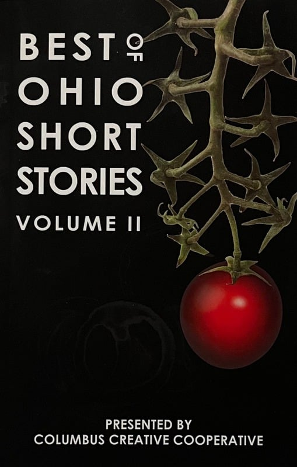

Nikos the Barber
Best of Ohio Short Stories Volume II | Presented by Columbus Creative Cooperative
When my friend Simon’s hair needed cutting, we always made the long walk to the one-chair shop owned by a Greek named Nikos. The shop was squeezed in at the end of a small alley. He cut hair well, but we went there for his stories. [...]